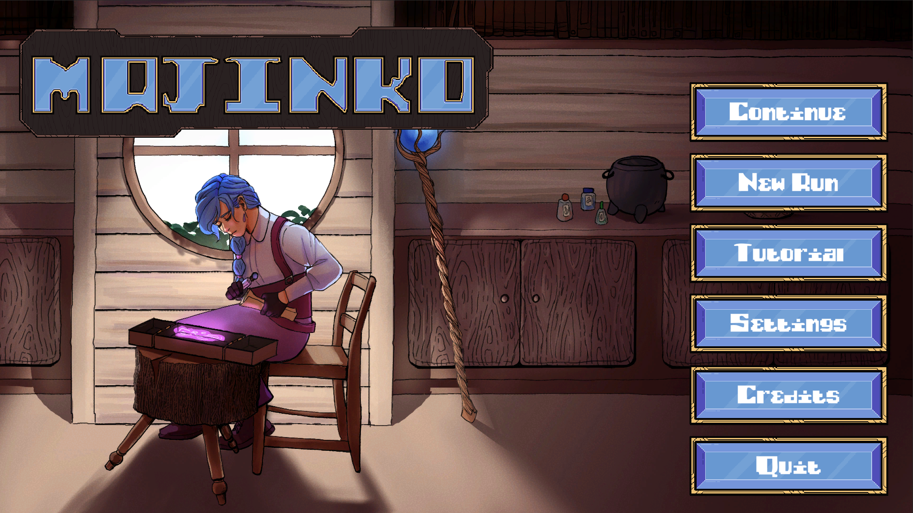

About me
Welcome everybody!
I'm a biologist working in the medical field and I am very enthusiastic about gaming and programming.
I am currently teaching myself web development with help of "The Odin Project" in order to switch careers.
Other hobbies of mine include: Game Development, Archery, Tennis, Volleyball and Tabletop roleyplaying games.
I hope you'll find my curated selection of projects interesting and we'll be in contact soon!
My work

Majinko
Majinko is a Pachinko deckbuilding game.
My involvement were game and card design, as well as all of the C# code within the Unity Engine.
As my first somewhat bigger project, this taught me a lot about programming concepts and the importance of good code and project architecture.

Tutorial Series
After letting Majinko rest, I wanted to revisit the core gameplay mechanics of the game and make my code
accessible to Unity C# beginners, since there weren't too many card game tutorials on Youtube at the time.
As of February 2024, this series is still ongoing, with two videos released so far.
PnP Notebook
This will be my final full-stack portfolio and passion projects after completing "The Odin Project".
Implementing everything I learned about Html, CSS, Javascript, React and Express, this app will serve
as a convenient way to take notes during online roleplaying sessions and enable the user to link names of
characters, locations and objects to a database of short summaries regarding them.
The notes will also
be searchable, and the user will be able to upload a pdf of their character sheet.
Contact me
Please get in touch if you think our work could be mutually beneficial!
86911 Dießen am Ammersee